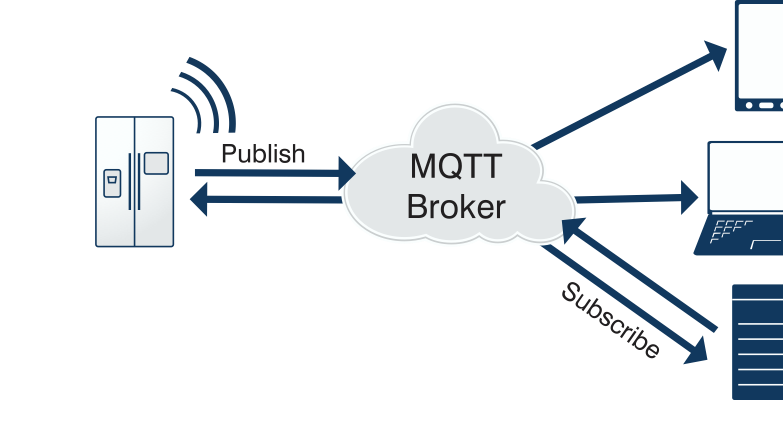

2. MQTT简介¶
常用的物联网应用层协议包括MQTT、HTTP、XMPP、CoAP等。
MQTT（Message Queuing Telemetry Transport，消息队列遥测传输协议），是一种基于发布/订阅（Publish/Subscribe）模式的"轻量级"通讯协议，该协议构建于TCP/IP协议上，由IBM在1999年发布。MQTT最大优点在于，可以以极少的代码和有限的带宽，为连接远程设备提供实时可靠的消息服务。作为一种低开销、低带宽占用的即时通讯协议，使其在物联网、小型设备、移动应用等方面有较广泛的应用。
MQTT是一个基于客户端-服务器的消息发布/订阅传输协议。MQTT协议是轻量、简单、开放和易于实现的，这些特点使它适用范围非常广泛。在很多情况下，包括受限的环境中，如：机器与机器（M2M）通信和物联网（IoT）。从当前物联网应用发展趋势来分析，MQTT协议具有一定的优势。目前国内外主要的云计算服务商，比如阿里云、AWS、百度云、Azure以及腾讯云都支持MQTT协议。
2.1. MQTT协议实现方式¶
MQTT系统由与服务器通信的客户端组成，通常称服务器为“代理Broker”。客户可以是信息发布者Publish或订阅者Subscribe。每个客户端都可以连接到代理。 信息按主题层次结构组织。当发布者具有要分发的新数据时，它会将包含数据的控制消息发送到连接的代理（服务器）。然后，代理将信息分发给已订阅该主题的任何客户端。发布者不需要有关于订阅者数量或位置的任何数据，而订阅者又不必配置有关发布者的任何数据。
MQTT传输的消息分为：Topic和payload两部分：
（1）Topic，可以理解为消息的类型，订阅者订阅（Subscribe）后，就会收到该主题的消息内容（Payload）；
（2）payload，可以理解为消息的内容，是指订阅者具体要使用的内容。
2.2. MQTT协议的核心名词¶
1.订阅（Subscription）
订阅包含主题筛选器（Topic Filter）和最大服务质量（QoS）。订阅会与一个会话（Session）关联。一个会话可以包含多个订阅。每一个会话中的每个订阅都有一个不同的主题筛选器。
2.会话（Session）
每个客户端与服务器建立连接后就是一个会话，客户端和服务器之间有状态交互。会话存在于一个网络之间，也可能在客户端和服务器之间跨越多个连续的网络连接。
3.主题名（Topic Name）
连接到一个应用程序消息的标签，该标签与服务器的订阅相匹配。服务器会将消息发送给订阅所匹配标签的每个客户端。
2.3. MQTT协议相关知识¶
1.QoS级别
QoS (Quality of Service) 是发送者和接收者之间，对于消息传递的可靠程度的协商。
QoS的设计是MQTT协议里的重点。作为专为物联网场景设计的协议，MQTT的运行场景不仅仅是PC，而是更广泛的窄带宽网络和低功耗设备，如果能在协议层解决传输质量的问题，将为物联网应用的开发提供极大便利。
在MQTT协议里，定义了三个级别的QoS，由低到高分别是:
最多一次 (QoS0)
至少一次 (QoS1)
有且仅有一次 (QoS2)
QoS0 是最低级别，基本上等同于 Fire and Forget 模式，发送者发送完数据之后，不关心消息是否已经投递到了接收者那边。
QoS1 是中间级别，保证消息至少送达一次。MQTT 通过简单的 ACK 机制来保证 QoS1。
QoS2 是最高级别，保证到且仅到一次。这通过更加复杂的消息流程保证。
QoS 级别越高，流程越复杂，系统资源消耗越大。应用程序可以根据自己的网络场景和业务需求，选择合适的 QoS 级别：
比如在同一个子网内部的服务间的消息交互往往选用 QoS0；而通过互联网的实时消息通信往往选用 QoS1；QoS2 使用的场景相对少一些，能想到的如国防武器，医疗设备等应用场景。
2.连接保活心跳机制（Keep Alive Timer）
MQTT客户端可以设置一个心跳间隔时间（Keep Alive Timer），表示在每个心跳间隔时间内发送一条消息。如果在这个时间周期内，没有业务数据相关的消息，客户端会发一个PINGREQ消息，相应的，服务器会返回一个PINGRESP消息进行确认。如果服务器在一个半（1.5）心跳间隔时间周期内没有收到来自客户端的消息，就会断开与客户端的连接。心跳间隔时间最大值大约可以设置为18个小时，0值意味着客户端不断开。
3.遗言标志（Will Flag）
在可变报文头的连接标志位字段（Connect Flags）里有三个Will标志位：Will Flag、Will QoS和Will Retain Flag，这些Will字段用于监控客户端与服务器之间的连接状况。如果设置了Will Flag，就必须设置Will QoS和Will Retain标志位，消息主体中也必须有Will Topic和Will Message字段。
那遗愿消息是怎么回事呢？服务器与客户端通信时，当遇到异常或客户端心跳超时的情况，MQTT服务器会替客户端发布一个Will消息。当然如果服务器收到来自客户端的DISCONNECT消息，则不会触发Will消息的发送。因此，Will字段可以应用于设备掉线后需要通知用户的场景。
4.标注位（RETAIN）
当我们使用MQTT客户端发布消息（Publish）时，如果将RETAIN标志位设置为true，那么MQTT服务器会将最近收到的一条RETAIN标志位为true的消息保存在服务器端（内存或文件）。
特别注意：
MQTT服务器只会为每一个Topic保存最近收到的一条RETAIN标志位为true的消息。也就是说，如果MQTT服务器上已经为某个Topic保存了一条Retained消息，当客户端再次发布一条新的Retained消息，那么服务器上原来的那条消息会被覆盖！
每当MQTT客户端连接到MQTT服务器并订阅了某个Topic，如果该Topic下有Retained消息，那么MQTT服务器会立即向客户端推送该条Retained消息。